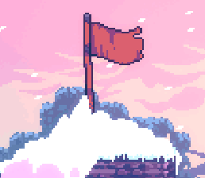

Lilla mull, mis lennutab mängija õhku ja annab tagasi sööstu laengu. Kui mängija on kasutanud ära mulli, liigub see järgmisesse positsiooni ja viimane kasutus lennutab mängija uude ruumi.
Peatükis 7 saab Madeline uue motivatsiooni eluks ja alustab viimast tõusu otse mäe tippu.
Lilla mull, mis lennutab mängija õhku ja annab tagasi sööstu laengu. Kui mängija on kasutanud ära mulli, liigub see järgmisesse positsiooni ja viimane kasutus lennutab mängija uude ruumi.

Lipu märgiga kivist märgis, mis ütleb mängijale, kui kaugel nad on mäe tippust. Märk aktiveerib, kui mängija läbib selle. Märgi aktiveerimisel, lendab välja konfetit.

Punane lipp, mis on mäe tippus. Kui mängija puudutab lippu, lõppeb tase ja ka mäng. Pärast seda tuleb ekraanile lõpp pilt ja ka kui kaua võttis mängijal läbi terve mängu, et jõuda tippu.